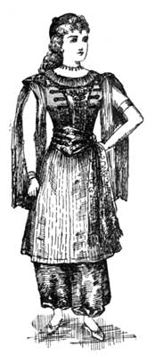
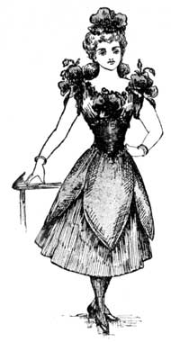

Florence Mary Gardiner, Evolution of Fashion. Davis, ed. from the 1897 edition. [eng]. Cited by chapter/paragraph.
Passages x.1-x.37
urn:cts:fuTexts:gardiner.eof.davis:x.1-x.37
x.1CHAPTER X
x.2STAGE AND FLORAL COSTUME.
x.3"All the world's a stage, And all the men and women merely players, They have their exits and their entrances, And one man in his time plays many parts."
x.4Garrick was one of the first of our English actors to realize how much the success of a piece depended upon appropriate costume, and, on his taking the management of Drury Lane Theatre in 1747, at once turned his attention to this important branch of dramatic art. He refused to tolerate the absurdity of a heterogeneous mixture of the foreign and ancient modes, which had hitherto debased tragedies by representing, for instance, Greek soldiers in full-bottomed wigs, and the King of an Oriental Nation in trunk hose. The improvement, however, must have been very gradual, for Garrick is said to have played the part of Macbeth ten years later in a gold-laced suit of sky blue and scarlet; while Mrs. Yates as Lady Macbeth appeared in a hooped court petticoat of enormous dimensions, with tight-fitting pointed bodice and elbow sleeves, and her powdered hair dressed over a high cushion. Garrick's suits for the characters of King Lear and Hamlet also followed the fashions of the 18th century, though he played Richard III. in a fancy dress designed with some regard to correctness of detail. Even during the present century, an equally absurd anachronism may be recorded. The late Mr. Charles Mathews made his first appearance in public, at the Theatre Royal, Richmond, as Richmond in Richard III., wearing the helmet and jacket of a modern light horse soldier.

x.6The first pantomime or harlequinade was played in England in 1717, and the earliest illustration of an English harlequin in the dress now familiar to us, is to be found in a sketch of Bartholomew Fair, dated 1721. Of the characters of columbine, pantaloon, and clown, we have no contemporary drawings. Of the French ballet dancers of this period there are some carefully-executed plates in Planche's "CyclopAedia of Costume." They are all represented in long, and sometimes in trained skirts. The first example of the abbreviated ballet skirt, reaching to the knee, is given in the portrait of an actress personating Le Zephyr, about the middle of the 18th century. The peasant costume of various nations has also been adapted to stage purposes with excellent effect.
x.7The late Hon. Lewis Wingfield devoted much time to designing the stage dresses of the Victorian era, and Madame Alias--who has also passed away--provided the costumes in Mr. Calvert's revival of Henry VIII., and was also responsible for dressing many of the Alhambra ballets and the plays at London and provincial theatres. Madame Bernhardt, Miss Ellen Terry, Mrs. Langtry, Sir Henry Irving, and the late Sir Augustus Harris have also brought their influence, money, and taste to bear on correct stage costume, with the result that we have had many sumptuously-dressed revivals and new plays, which otherwise might have sunk into oblivion. Such spectacles as are often to be seen at our leading Metropolitan theatres and music halls, if they fail to touch the public fancy, mean absolute and irretrievable ruin to their promoters; and when it is remembered that many thousands are spent annually in staging theatrical enterprises, before a single seat is booked, it will at once be seen what enormous sums must be involved in furthering dramatic interests. The public, who have for the last sixty years been catered for so generously, are sometimes apt to overlook the difficulties with which the scenic artist has to contend.
x.8It would be impossible within the circumscribed limit of a single volume to minutely describe even the most notable theatrical costumes of the last half century, but a few of the most effective floral costumes will be appended for the benefit of those who desire to introduce them into various entertainments.
x.9The steady patronage of Her Majesty the Queen and the Royal Family have done much to remove any prejudices which existed against the drama, and as a powerful auxiliary to education the stage is rapidly gaining ground. Dull, indeed, must the theatre-goer be if he leaves without having assimilated some valuable lesson. To Shakespeare we owe many ideal types of womanhood, all the more precious now that some of the weaker sex, in an insatiable desire for progress, sometimes neglect those lesser arts which in the past proved to them a shield and buckler. The classical and historical pieces allow us to live again in scenes which occurred when the world was young, and convince us, though the tastes of the people were simpler, human nature, with its passions and aspirations, has changed but little. Who can deny the moral influence of such plays as "The Sign of the Cross," "Hypatia," "The Daughters of Babylon," "Virginius," or those of the Robertson school, of which "Caste" and "Ours" are examples? A love of music is not considered a marked trait of the English nation, yet have not Italian and comic opera stimulated a desire for a concord of sweet sounds among all classes of the community? Such plays as "Patience" and the "Mikado" have developed our instinct for colour and form, and we are taught the value of industry and restraint when we watch well-trained actors, capable of controlling every gesture, and of charming us with their well-modulated voices. Our lives are cheered by viewing the comic side of things, and on our clothing and household possessions, the stage has also laid a refining hand.
x.10FLORAL COSTUMES.
x.11A POPPY.
x.12The bodice and skirt of red accordion, pleated _mousseline de soie_, the petals of the flower and belt in bright red silk. Large silk poppies appear on the shoulders and bust, and one of extra size is used for a head-dress. With this costume neat black shoes and silk stockings should be worn, and a palm-leaf fan covered with poppies and foliage should be carried.

x.14LILY OF THE VALLEY.
x.15Corsage and skirt of white pleated Valenciennes lace mounted on green silk. A full berthe of the flowers. White lace hat entirely covered with these blooms, and fan to correspond.
x.16MOSS ROSE.
x.17Gown of pink satin, veiled with tulle and flecked with rose buds. A ruche of moss roses at the hem of the skirt and on the bodice. A Dolly Varden hat trimmed with moss roses and pink ribbon.
x.18WILD ROSE.
x.19Dress of shot pink and white satin, embroidered or painted with clusters and trails of wild roses and foliage. Skirt edged with full ruche of pink tulle studded with roses, and corsage trimmed to correspond. _Coiffure poudre_ dressed with small basket of roses and pink ribbon.
x.20WHITE ROSE.
x.21Gown with Watteau train of white satin edged with leaveless roses, chains of the same flowers carried across the front of the dress, and outlining the square-cut bodice, and elbow sleeves. Ruffles of lace. A wreath of white roses in the powdered hair, and a crook decorated with flowers and ribbon streamers.
x.22SUMMER ROSES.
x.23Gown of cream-coloured brocade, with design in shaded roses and foliage, trimmed with garland of roses of different tints embedded in tulle. Decollete corsage trimmed to correspond, and a damask rose worn in the hair.
x.24WILD FLOWERS.
x.25Dress of pale blue satin, veiled with green tulle. Trails of forget-me-nots, poppies, marguerites, buttercups, and grass depending from the waist-belt to edge of skirt, and bodice trimmed to correspond. A Leghorn hat garnished with wild flowers, grass, and blue ribbons.
x.26GARDENIA.
x.27Greek dress of white crepe de Chine, embroidered in classical design with silver. In front diagonal trails of gardenias and their dark foliage arranged from the right shoulder to left side of dress. The hair bound with silver bands. A shower bouquet to correspond.
x.28THE SHAMROCK.
x.29Gown of emerald green satin appliqued with velvet shamrocks of a darker shade. The stomacher a large trefoil in emeralds, and the short sleeves cut to resemble the Irish emblem. Corsage veiled with green tulle strewn with tiny shamrocks, and a coronet of the same in the hair.
x.30THE THISTLE.
x.31High dress of eau de nil satin. The skirt edged with a wreath of thistles, which are also embroidered in a bold design on the front of gown and bodice. Satin hat trimmed with thistles and ribbon, and black staff tied with thistles and ribbon streamers.
x.32DANDELION.
x.33Gown of yellow accordion, pleated chiffon finished on the skirt with trails of flowers from the waist to hem of the skirt, interspersed with the seed pods commonly known as blow-aways. The bodice of pleated yellow chiffon with dandelions across the berthe and clusters on the shoulders. A wreath and aigrette to correspond.
x.34IRIS.
x.35Dress of white satin, veiled with mauve chiffon, flecked with iris petals. Trails of mauve and white flowers tied with bows of satin in alternate shades, and carried across the skirt. Square cut corsage to correspond, and elbow sleeves. A muslin cap trimmed with the same flowers. Powdered hair.
x.36LILAC.
x.37Gown of cream satin brocaded with mauve and white lilac, Marie Antoinette, white chiffon fichu, and cap trimmed with clusters of shaded lilac and foliage. Elbow sleeves with chiffon ruffles. The white satin fan painted to correspond, and caught by a flower chatelaine. The hair dressed with the same flowers, and a twisted scarf of mauve and white chiffon.